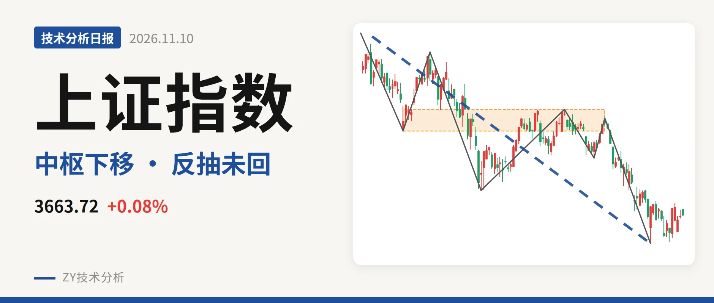
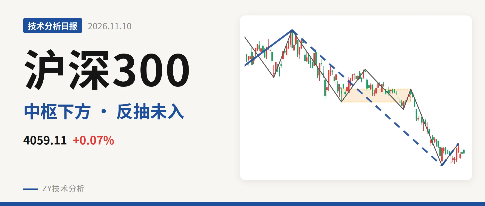
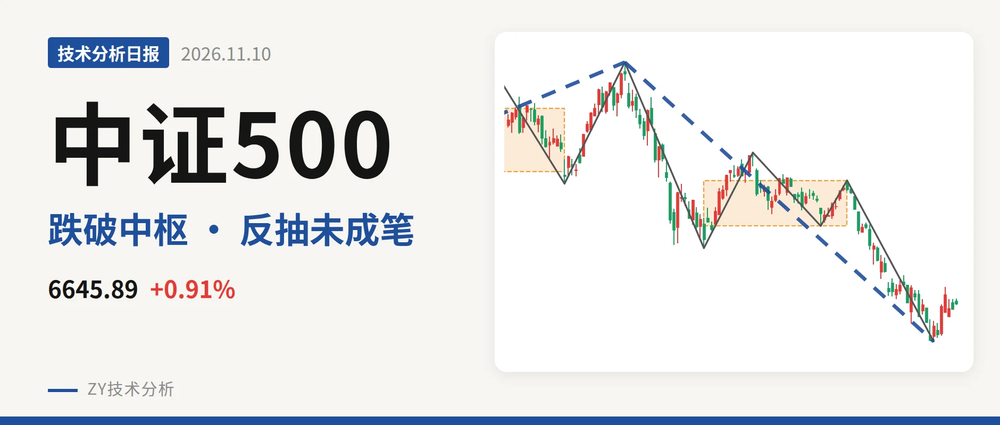
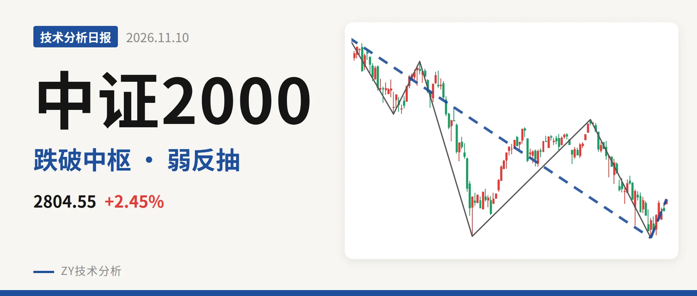
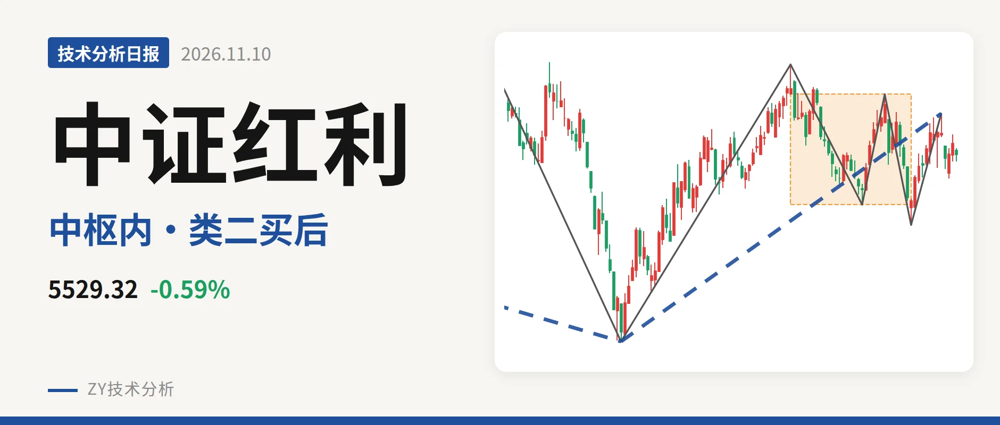

技术分析日报 · 2026-11-10

上证指数 3663.72 +0.08%
反抽未回中枢 三卖待验

沪深300 4059.11 +0.07%
反抽未及4478点，中枢下方仍弱

中证500 6645.89 +0.91%
一买后反抽未成笔，7451成坎

中证2000 2804.55 +2.45%
反抽至2807点附近，仍被3280三卖压制

中证红利 5529.32 -0.59%
回踩中枢内，5646点承压

创业板指 2458.56 -0.27%
一买后反抽未成笔，压力看3227点附近
⚠️ 本文为基于公开行情数据的缠论技术结构记录，由程序自动计算并生成，仅供学习交流，不构成任何投资建议。市场有风险，投资需谨慎。